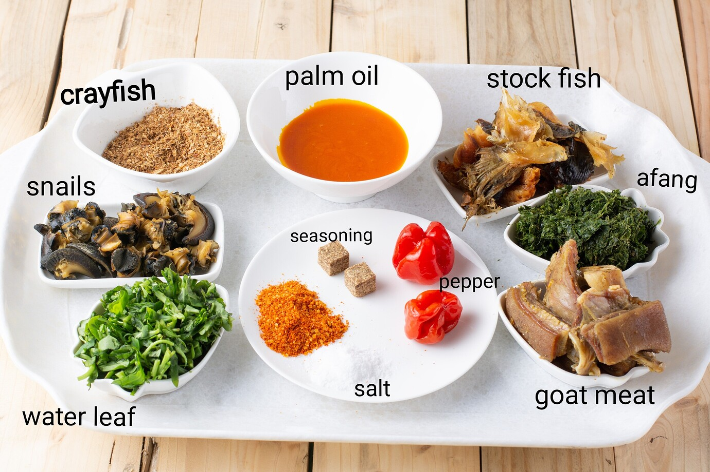
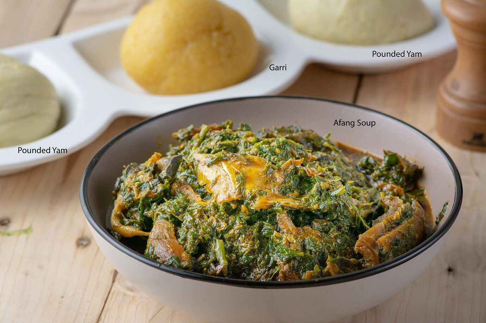

Recipe Information
Preparation Time: 20 minutes
Cooking Time: 45 minutes
Servings: 5
Difficulty Level: Intermediate
Ingredients
- 500g Afang(Okazi) leaves, shredded
- 1kg Waterleaf (or spinach), chopped
- 800g Assorted meats (beef, goat meat, cow tripe)
- 200g Stockfish (pre-soaked) and smoked fish
- Snail(optional)
- 1 cup Palm oil
- 4 tablespoons Ground crayfish
- 2 Scotch bonnet peppers, chopped
- 2 Medium onions (chopped)
- 2–3 Seasoning cubes
- Salt to taste
Instructions
- Wash and season the assorted meats. Cook until tender, reserving the stock.
- In a large pot, heat the palm oil and sauté(quickly fry) onions and chopped peppers for 2–3 minutes.
- Add smoked fish, stockfish, and crayfish. Stir well.
- Add the cooked meats with their stock, seasoning cubes, and salt. Simmer for 5 minutes.
- Add waterleaf and cook until wilted.
- Stir in the shredded Afang leaves, mix thoroughly, and simmer for another 10 minutes.
- Adjust seasoning, remove from heat, and serve hot with fufu, garri, or pounded yam.
Cooking Tips
Tip: Add the Afang leaves towards the end of cooking to retain their flavor and nutrients. For a richer taste, use the meat stock instead of plain water.
Dish Photo
This photo shows the final product - a well prepared afang soup to be served with either garri or pounded yam. It can also be served with fufu. Bon appétit😋.
Original inspiration from All Nigerian Recipes
Nutrition Facts (per serving)
- Calories: ~468 kcal
- Protein: ~15 g
- Fat: ~45 g
- Carbohydrates: ~2 g
Disclaimer: These values are estimates based on one source. Actual nutrition will vary depending on the specific ingredients, quantities, and portion sizes used.